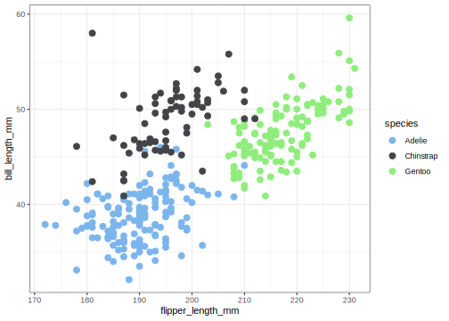
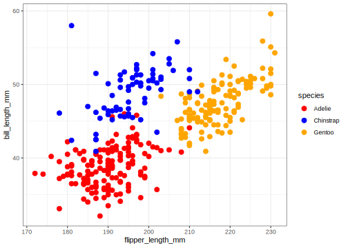
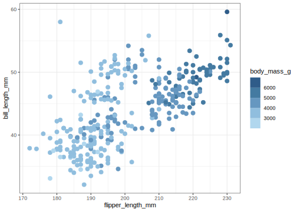

penguins |> ggplot(aes(flipper_length_mm, bill_length_mm, color = species)) +
geom_point(size=3) + theme_bw() +
scale_color_viridis_d(begin = 0.1, end = 0.9, option = "D")32 Using colour well
A visualization that uses colour effectively can be easier to understand and remember than a gray-scale or black and white one. Careless use of colour can create confusing and ineffective visualizations. There are a few main ways colour is used: to indicate levels of a categorical variable, to indicate values of a quantitative variable, to highlight some element of the data, and to advance a graphic design goal.
Most documents and presentations will contain more than one visualization. As you edit and finalize your visualizations, you should be careful to ensure the use of colour is consistent or appropriately contrasting when your visualizations are considered as a set.
In this lesson we will examine the effective use of colour on visualizations and show how to customize colour scales and legends with ggplot. Your ultimate goal is communication, so once your visualization is nearly complete you must consider whether your use of colour is effective and helps you with your communication goals.
32.1 Disciplinary, cultural, and human elements
There are existing conventions for the use of colour in many disciplines. For example, topographic maps have a consistent use of green-brown scales to show altitude. Temperature is often indicated on a blue-red scale for cold to warm. In more abstract or less commonly encountered settings, there may be no obvious scheme to use to indicate larger/smaller or positive/negative and then cultural patterns take over. In particular some people will want to use red for increases/positive values while others may want to use red to mean decreases/negative values. A good legend should always be included to make your meaning explicit. People have different preferences for colour, from liking bold, saturated colours to preferring muted, pastel colours. Usually extreme choices should be avoided to make your colour choices appealing to as wide an audience as possible. This is the motivation for using established colour scales that are already popular. Finally, you should be aware that a fraction of the population has some degree of colour vision deficiency. There are tools to screen for these design concerns, but an easy to remember guideline is to not use red and green on the same visualization.
32.2 How will the colour be displayed?
Your visualizations will most likely be displayed in one of three ways: on a computer monitor up to one meter from one person’s eyes, on a projector many metres away from the eyes of a group of people, or on paper. Within each of these media, there is considerable variation – computer montors differ in how they display colour, projectors may be located in a bright or dark room, and paper can be matte or glossy – but the differences across these media are huge.
When you look at a visualation on your own computer monitor, you are able to perceive fine colour differences and small features such as relatively minor differences in line thickness and symbol size. Many of these differences are “washed out” when images are displayed on a projector, either because of the projector itself or because of the environment in the room such as other light sources or the distance between the image and the observer. Light colours will look nearly white and various dark colours will be difficult to distinguish when projected. The differences that arise when colour is printed are even more dramatic. This is partly due to the fact that the mechanism of showing the colour is so different: on a computer display, light shines through a filter or is emitted in a particular colour combination, but on paper, dyes absorb incident light and must be layered and blended together. Yellow-white combinations that look great on a computer display may not work on a sign in front of a business (see figure).
32.3 Naming colours
In order to use a colour, you must identify it in some way. There are many ways to name colours: by appeal to the rainbow spectrum, widely-used corporate names for crayons and printing (Pantone), software systems such as unix X11, and of course a huge variety in common usage. The rainbow contains colours in an order arranged by wavelength, but this numbering misses a huge number of colours.
On computers, colours are often identified using a particular colour model:
- red-green-blue (RGB), which refers to the three colours in the pixels of your montior and the wavelength of greatest sensitivity of the colour sensors in your eye;
- cyan-magenta-yellow-black (CMYK) which refers to the four colours used in basic (“4 colour”) printing;
- hue-saturation-brightness (HSB), which separates dimensions of perception of colour;
- hue-chroma-lightness (HCL), such as the Munsell color system;
- and many others!
A key difference between these schemes is that RGB and CMYK are about mixing different amounts of colour together, while HSB and similar schemes have separate values for very different perceptual features: hue, saturation (or chroma, colourfulness), and brightness (or lightness).
While names are required to identify a colour, none of these names are particularly helpful when selecting a colour, as that is a perceptual problem: you need to know what the colour looks like, and what it looks like in combination with other colours you selected. This the the palette problem: what set of colours will you use. The easiest solution to use a palette someone else has created already. A list of many palettes available in R is provided by the paletteer package. These palettes are collected in a GitHub repository.
Here are some online interactive tools for selecting colours:
- Color Brewer 2 shows a colour palette on a map and lets you select discrete and quantitative scales with options for the hues and number of colours in the palette.
- HCL wizard is good tool to famiiarize yourself with the HCL colour encoding
- Coolors emphsizes perceptual and artistic elements you might use to select colours for a palette
32.4 Categorical variables
Categorical variables with 5 or fewer levels you want to highlight are an excellent use of colour. With more than 5 categories, it becomes very difficult to quickly or reliably distinguish colours and map them from the data to the colour legend.
Let’s use the Palmer penguins data to show how three colours can be selected: by palette or as custom choices.
The viridis palette is designed to have approximately uniform brightness (making it suitable for printing in gray scale) and colour-blind friendly. There are four different colour scales you can select (option: magma = A, inferno = B, plasma = C, viridis = D, cividis = E), plus you select the beginning and ending location (begin, end: numbers between 0 and 1). I find the end of the viridis scale to be too yellow, so I usually adjust end.
Now I’ll show how to use other scales you can find from paletteer. Here we use the ggthemes package and its palette hc_default.
# paletteer_d("ggthemes::hc_default", n = 3) # to see the colours
penguins |> ggplot(aes(flipper_length_mm, bill_length_mm,
color = species)) +
geom_point(size=3) + theme_bw() +
scale_color_paletteer_d("ggthemes::hc_default")
To make a custom scale use scale_color_manual. You need to give the right number of colours (or some extras which will be ignored), or a function which takes and integer and returns that many colours.
penguins |> ggplot(aes(flipper_length_mm, bill_length_mm,
color = species)) +
geom_point(size=3) + theme_bw() +
scale_color_manual(values = c("red", "blue", "orange"))
32.5 Quantitative variables
Quantitative data can be effectively displayed using colour on a monochromatic scale to show larger-smaller values, but be aware that your ability to convey quantiative values is very limited. Even the apparently simple task of showing the ordering of quantitative values is difficult because you perceive colour and shading in a local context, as demonstrated by the checker shadow illusion.
Quantitative data that are separated into positive and negative, or above or below a mean or reference value, are effectively displayed by diverging colour scales (red-blue, green-brown, etc.), sometimes with a neutral colour (white or black) in the middle. One reason this works so well is that it converts a quantitative scale into a categorical two-valued scale, with some residual variation shown with brightness, so be sure that there is a good reason to divide the scale into two classes.
Quantitative data are almost always best shown as position on an axis, so when would you want to use colour brightness to show a quantitative variable? A common reason is that you are putting points on a map (or heatmap) and the location in the visualization is being used to describe the location on the map. A related reason is that you are trying to display a third quantitative varaible. Here we will use the penguin data and show body mass as colour.
Quantitative values can be mapped onto colour in a “continuous” way or in a “binned” way. Of course there are only a finite number of colours so this is a matter of degree. Do you want colours to change smoothly (continuously) or do you want a small number of discrete colours (binned). Examples of both are shown below.
penguins |> ggplot(aes(flipper_length_mm, bill_length_mm,
color = body_mass_g)) +
geom_point(size=3) + theme_bw() +
scale_color_viridis_c(begin = 0.2)penguins |> ggplot(aes(flipper_length_mm, bill_length_mm,
color = body_mass_g)) +
geom_point(size=3) + theme_bw() +
scale_color_paletteer_binned("ggthemes::Blue")
If it is important to draw a difference between two classes, for example positive and negative values, or numbers larger and smaller than a mean, you can use a diverging colour scale. For variety I will use functions from the RColorBrewer package that has a great set of palettes. With a diverging colour scale you generally want to make a symmetric scale so that 0 is placed at the centre of your color scale.
penguins |> mutate(body_mass_centered =
body_mass_g - mean(body_mass_g, na.rm=TRUE)) |>
ggplot(aes(flipper_length_mm, bill_length_mm,
color = body_mass_centered)) +
geom_point(size=3) + theme_bw() +
# scale_color_distiller(type="div", palette="RdBu", limits = c(-2000,2000))
scale_color_fermenter(type="div",
palette="RdBu",
limits = c(-2000,2000)) The ‘fermenter’ function makes a binned quantitative scale, while the distiller makes a continuous quantitative scale. Experiment with both to see the difference.
32.6 Highlighting
Sometimes you will just want to highlight a small number of points. Perhaps they are outliers or interesting for a particular reason. One of the most flexible ways to do this is to create a new variable that identifies an observation as being highlighted or not, then use this to control plotting.
32.7 Consistent use of colour across multiple figures
Wilke has some excellent ideas about using colour effectively and consistently across figures and in multi-panel figures. Key points are
- if the same information (species, highlights) occurr in multiple figures, use the same colours to mean the same thing in each figure
- if you have figures that show the data in contrasting ways, for example with species in one figure and no species in a different figure, use different colour pallettes in the two figures to avoid confusion.
32.8 Annotation to avoid legends
Particularly in a oral presentation you want your figure to be decoded rapidly. A legend off to one side slows down your reader and requires focus to move back and forth between the data and the legend. You can use coloured text labels on the plot to reduce the need for legends.
penguins |> ggplot(aes(flipper_length_mm, bill_length_mm,
color = species)) +
geom_point(size=3, show.legend = FALSE) + theme_bw() +
scale_color_manual(values = c("red", "blue", "orange")) +
annotate("text", x = 175, y = 44, label = "Adélie", color = "red", fontface = "bold") +
annotate("text", x = 195, y = 55, label = "Chinstrap", color = "blue", fontface = "bold") +
annotate("text", x = 220, y = 40, label = "Gentoo", color = "orange", fontface = "bold") 32.9 Colour vision deficiency
You should be aware that not everyone peceives colour in the same way. In particular, avoid combining red and green on the same plot. Here are a few links to help you learn more:
- Colour Blind Awareness
- NIH statistics and other data
- Wikipedia
- An R package to simulate colour vision deficiency.
32.10 Summary
Color is most useful
- to highlight information already distinguished in some other way,
- to distinguish a small number of categories (2-5), and
- as a semi-quantitative scale, particularly if only one or two hues are used (e.g., red and blue) in varying degrees of brightness or saturation.
Avoid using more than 5 colours. It is hard to make quantitative comparisons between two colours. There are lots of tools to help you select colour palettes that work together well. The viridis and RColorBrewer palettes are often good choices.
32.11 Packages used
In addition to the tidyverse and palmerpenguins packages, in this lesson I’ve used functions from
ggthemespaletteerRColorBrewer
32.12 Suggested reading
- Colour in Healy Chapter 8
- Colour in Wilke Chapter 4
- Which color scale to use? a 4-part blog posting
- Paleteer R package
- Catalog of palettes
- Color Brewer 2 interactive website to select and illustrate use of color scales on maps.
- HCL wizard
- The colorspace package enables conversions between many different ways of describing colours
- The story of the dress